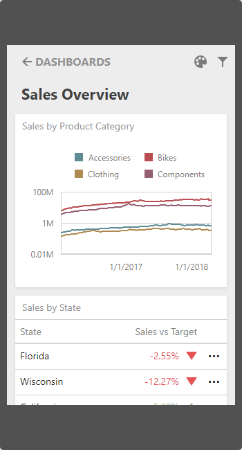
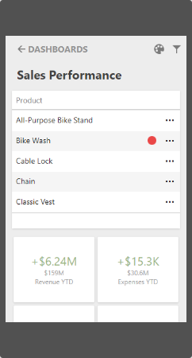
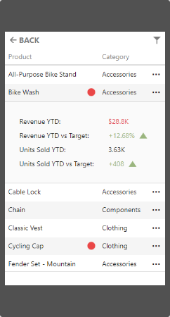
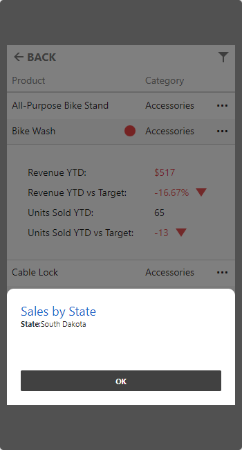
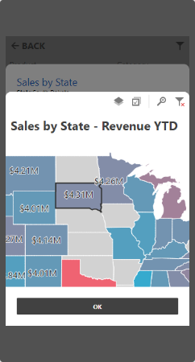

Mobile Layout
This topic describes the Web Dashboard's mobile layout that enables you to display dashboards on mobile phones.

Note
You can export only dashboard items when the Web Dashboard displays dashboards on mobile phones.
Mobile Layout's Views
Web Dashboard in the mobile layout consists of the following views:
List View
The List view displays all dashboard items used in the current dashboard. The item's interactivity is disabled. Filter elements are not displayed in the List view (see Dashboard Items Behavior).

Item View
The Item view displays the selected item. Interactivity is supported. Filter elements are not displayed in the Item view (see Dashboard Items Behavior).

Filter Panel
The Filter panel displays filters that are applied to the entire dashboard / dashboard items. Click the Filter button (the icon) in the List view / Item view to see the filters applied to the entire dashboard / dashboard item, respectively. Click the required filter in the Filter panel to open the corresponding filter element and filter data.
 
Dashboard Items Behavior
The items listed below are displayed with the following specifics when used in the mobile layout:
Grid
- The Grid always adjusts columns automatically to the minimum width required to completely display its content.
- Grid hides columns to adapt the content to the screen or container size. Click the ellipsis button in the Grid's row to display hidden data inside the adaptive detail row.
- The default column fit of the sparkline and bars is two times tighter then in a desktop version.
- Column resizing is disabled.
Cards
- Cards in the mobile layout are always arranged automatically.
Filter Elements
- Filter elements are displayed only in the Filter panel and are hidden in the List and Item views.